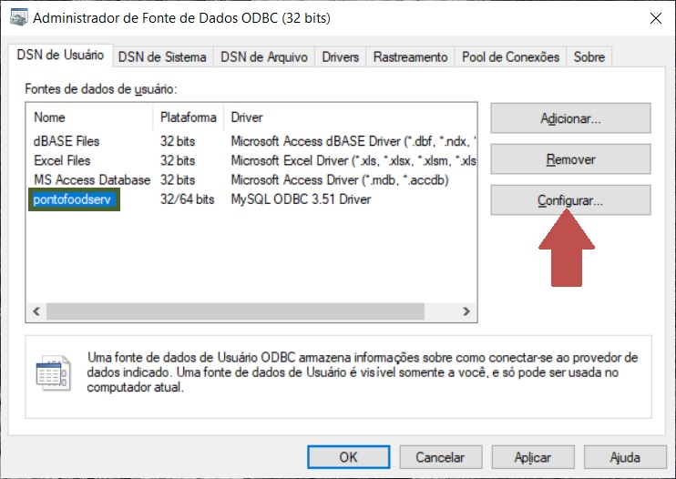

Como saber se é o servidor
Clique em iniciar (flecha verde) e digite ODBC (retângulo vermelho), em seguida clique em ODBC (flecha azul).

A tela a seguir irá aparecer. Nela clique em pontofoodserv (retângulo verde) e depois clique em Configurar (flecha vermelha).
Agora, no local do retângulo verde ou terá o número 127.0.0.1 ou estará escrito localhost. Caso nenhum dos dois esteja no local do retângulo verde, o computador não é o servidor!